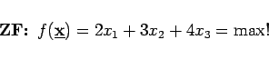
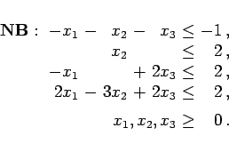
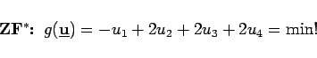
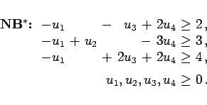

Inhalt Index DeskTop Bronstein

 Optimierung Lineare Optimierung Simplexverfahren Dualität in der linearen Optimierung
Optimierung Lineare Optimierung Simplexverfahren Dualität in der linearen Optimierung


Die Bearbeitung des dualen Problems kann in den folgenden Fällen von Vorteil sein:
| Beispiel |
|
Für das Beispiel aus Abschnitt Ecke und Basis gilt ohne Schlupfvariablen: 



|